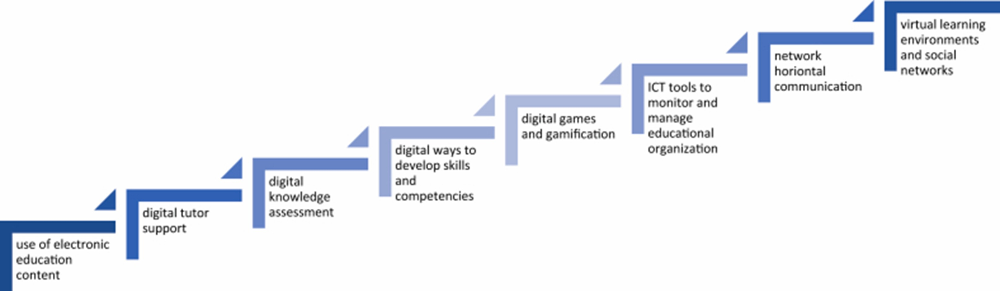
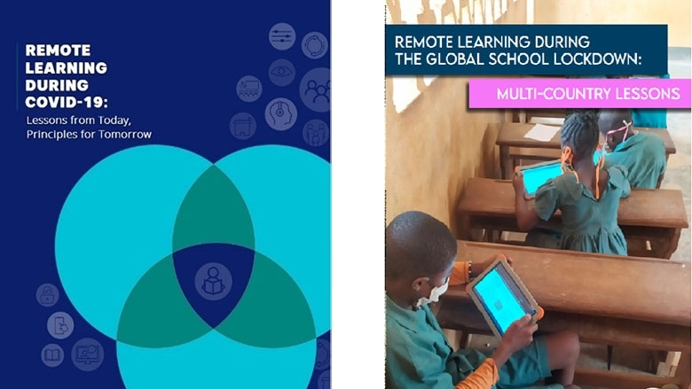

COVID-19: Educational Impacts
The Shift to remote learning
During the time of the COVID-19 Pandemic, the world has seen a
drastic shift in Education, the workplace, productivity, and overall,
the interpersonal & sociable abilities of people. First education, the
shift in how students are taught changed from the traditional inperson
classroom format into the collaborative & crossdisciplinary learning system.
The number of people attending Universities, and Institution (public & private)
has significantly increased in the last few decades, as well as digitalization
has been incorporated into the field of education which introduced
distant/remote learning methods via digital technologies.
collaborative Learning Methods
Collaborative learning is a teaching method, which involves
bringing students together to discuss an important topic for a given
course, or curriculum, solving related problems and creating a
product. This allowed students to gain skills such as
communication, critical thinking, decision-making, problemsolving,
leadership & conflict management. Globally, many universities & institutions
had to close their campuses, and transition towards full online education format
in 2020, due to the COVID-19 pandemic, which also forced major evolution in the
digitalization of collaborative thinking. These major changes
include switching over to digital content, the increase for digital
tutor support, digital knowledge assessment, developing skills &
competencies through a multitude of digital ways, digital games &
gamification, the production of ICT tools which are then used for
monitoring & managing educational organization, as well as
creating new virtual learning environments & social networks

Detrimental & Adverse affects on Students Mental Health
The COVID-19 pandemic has also had wide-ranging & longlasting impact on education in the US;
students are facing years lost in their education. The sudden shift to remote learning
platforms significantly brought down instructional time, hindering
student learning, many students struggling to pay attention in class,
and have trouble asking for help understanding the material when
needed. There were educational inequalities within the Black &
Brown community, because of the lack of internet access, so some
students couldn’t keep up with their class work, so some spend less
time learning, increasing the odds of them dropping out of school
altogether.
The higher educational institutions globally faced an extraordinary
situation where access to a physical environment was limited, in
response they reacted quickly to carrying on academic activities
during the pandemic. They achieved this by adapting face-to-face
teaching methods with technological tools, given that faculty had
learnt some of the best practices that suit a virtual environment.
In the shift to the remote learning environment many aspects were
affected, such as the learning activities performed, the form of
interaction with other students, as well as the pedagogy
methodology used in this new dynamic class system, and plus due
to the isolation, it’s creating a heavy emotional tolls &
psychological strains on the faculty & students which can severely
affect the teaching & learning process, as well as the educational
outcomes.

Demographics
Demographically speaking, in 2022 only 26% of 8th graders were
either at or above proficient in math but back then in 2019 it was
33% of the 8th graders. 32% of 4th graders were either at or above
proficient in reading, only being 2% lower than before the
pandemic in 2019. 30% of all students in the US were chronically
absent from online classes, which is nearly double the prepandemic rates.
40% of students have experienced Adverse Childhood Experience (ACE),
family economic hardships, parents getting a divorce, or separated,
or they spend time in jail. All these averages are only a cover for severely
bad educational outcomes for students of color, those in immigrant families, children from
low-income families attending low-income schools. These gaps
that students face can overall affect their ability to succeed and
thrive as adults.